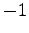

Next: Un esempio più complesso Up: SYSCALL Previous: SYSCALL Indice Indice analitico
La sezione '.data' comincia con l'inserimento in memoria di 5 messaggi che serviranno per far sapere
all'utilizzatore l'esito delle operazioni effettuate.L'etichetta 'value' é quella dove verranno salvati i dati letti,
dati che verranno prelevati per essere successivamente scritti sul file.
Di seguito troviamo l'elenco dei parametri necessari per la chiamata delle SYSCALL.
Per quanto riguarda la SYSCALL 1
bisogna salvare in memoria per prima cosa il path del file da aprire, e nella locazione di memoria immediatamente
successiva (quindi nella riga successiva) un intero che rappresenta la modalità d'apertura (per maggiori informazioni
riguardo alle modalità d'apertura rimandiamo alla sezione  ).
).
La SYSCALL 2 invece richiede un solo parametro,
il file descriptor del file da chiudere.
Le SYSCALL 3 e 4 necessitano dello stesso numero di parametri (tre), il primo é il file descriptor
del file da cui leggere(per la SYSCALL 3) o scrivere (per la SYSCALL 4), il secondo é l'indirizzo di memoria da cui
leggere (o scrivere) i byte, e il terzo é un'intero che rappresenta il numero di byte da leggere (o scrivere).
Infine la SYSCALL 5 accetta in ingresso un numero variabile di parametri; il primo é sempre necessario, ed é
la cosiddetta format string, cioè la striga da inviare allo standard output. A seconda del tipo di format string
può essere necessario salvare un numero arbitrario di altri parametri (per maggiori informazioni consultare
la sezione  o l'esempio
o l'esempio  ).
).
Passiamo ora alla sezione '.text'.Essa comincia con le operazioni necessarie per l'apertura del file, cioè
l'inserimento dell'indirizzo di memoria dell'etichetta 'params_sys1' nel registro r14 (riga 26). Ora si può chiamare la SYSCALL 1,
salvare il file descriptor del file letto in modo da poterlo riutilizzare (riga 29), e
controllare poi che il valore di ritorno della SYSCALL (contenuto in r1) sia diverso da  , nel qual caso si passa all' etichetta
'read'(riga 30).Se invece il valore dovesse essere si passa all'etichetta 'end', facendo in modo da salvare in r4 l'indirizzo di memoria
del messaggio di errore appropriato (righe 31, 32).
Il listato continua con il salvataggio nel registro r14 dell'indirizzo di memoria dell'etichetta 'params_sys3', dove viene poi
inserito (riga 35) il file descriptor del file da cui leggere precedentemente salvato. Allo stesso modo salviamo nell'apposta
zona di memoria l'indirizzo in cui salvare i byte letti (righe 36-37) e poi chiamiamo la SYSCALL 3. Come fatto precedentemente
controlliamo che il valore di ritorno della SYSCALL (contenuto in r1) sia diverso da , nel qual caso si passa all' etichetta
'write'(riga 39).Se invece il valore dovesse essere si passa all'etichetta 'end', facendo in modo da salvare in r4 l'indirizzo di memoria
del messaggio di errore appropriato (righe 40, 41).
La parte relativa alla SYSCALL 4 é molto simile a quella della SYSCALL 3. Infatti anche qui salviamo in memoria l'indirizzo iniziale dei
parametri richiesti (riga 43) e poi inseriamo lì il file descriptor del file su cui scrivere (riga 44), e nella locazione di memoria immediatamente
successiva mettiamo l'indirizzo (anch'esso di memoria) da cui prelevare i byte da scrivere (in questo caso lo stesso indirizzo in cui sono stati
depositati i byte appena letti dalla SYSCALL 3). Ora controlliamo che il valore di ritorno della SYSCALL (contenuto in r1) sia diverso da ,
nel qual caso si passa all' etichetta 'close'(riga 48).Se invece il valore dovesse essere si passa all'etichetta 'end', facendo in modo da salvare
in r4 l'indirizzo di memoria del messaggio di errore appropriato (righe 49, 50).
A questo punto bisogna chiudere il file, tramite la SYSCALL 4, che accetta come unico parametro il file descriptor da chiudere. Dopo aver controllato
ancora una volta l'assenza di errori (righe 55, 56, 57) passiamo all'etichetta 'end'.
Quest' ultima contiene le operazioni da effettuare prima di invocare la SYSCALL 5. Tali operazioni consitono nel salvare in r14 l'indirizzo di
'params_sys5' , e in 'params_sys5' l'indirizzo della format string. Eventuali paramtri aggiuntivi saranno prelevati
dalle locazioni di memoria immediatamente successive. Come si può notare la 'format string' nel nostro caso é molto semplice, e non
richiede parametri aggiuntivi; per un esempio più esaustivo da questo punto di vista consultare l'esempio  .
.
andrea 2007-08-22